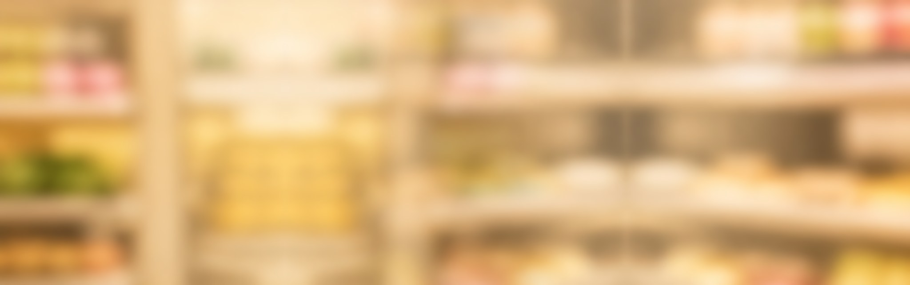
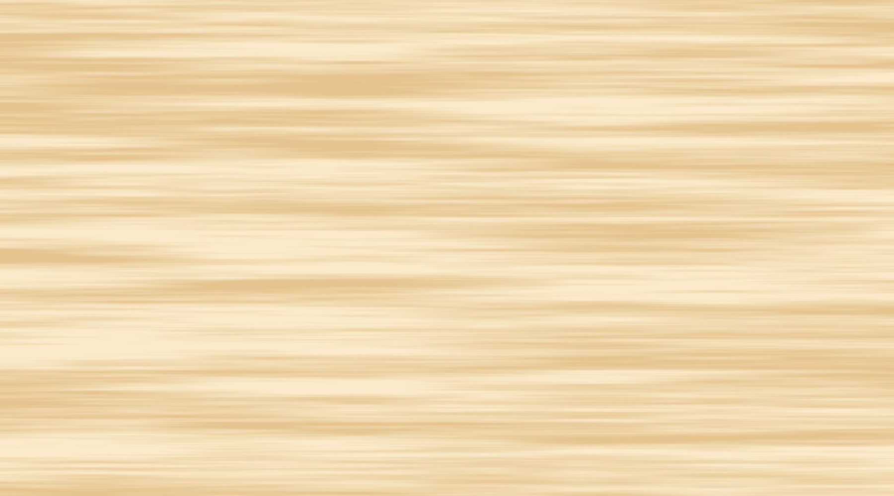

<!doctype html>
<html lang="es">
<head>
<meta charset="utf-8">
<title>Hojas de combos · Villa Real</title>
<style>
  /* Open Sans (OFL, en fuentes/): las letras del diseño que eligió el dueño. */
  @font-face { font-family: "Open Sans"; src: url("fuentes/OpenSans.ttf"); font-weight: 300 800; font-stretch: 75% 100%; font-style: normal; }
  @font-face { font-family: "Open Sans"; src: url("fuentes/OpenSans-Italic.ttf"); font-weight: 300 800; font-stretch: 75% 100%; font-style: italic; }

  /* Cada combo en su propia hoja, tamaño carta (216 × 279 mm), para imprimir y plastificar una a una.
     Todo va en milímetros, al tamaño real. generar.mjs saca cada hoja en PDF y en JPG a 300 ppp.
     El diseño es el de la imagen que trajo el dueño (fondos/referencia-dueno.png), con las fotos de verdad de cada producto. */
  @page { size: 216mm 279mm; margin: 0; }
  html, body { margin: 0; background: #888; }
  body { font-family: "Open Sans", Arial, sans-serif; display: grid; gap: 20mm; padding: 20mm; justify-content: start; }

  .hoja {
    --rojo: #a80d14; --rojo-oscuro: #7c0a10; --oro: #f2c14e; --crema: #fff6e3; --tinta: #2a1a14;
    /* La escala de los productos: lo que mide un centímetro real en la hoja. */
    --mm-por-cm: 3;
    position: relative; width: 216mm; height: 279mm; overflow: hidden; background: #f6e5c2;
  }

  /* El fondo: los estantes desenfocados detrás y el mostrador de madera delante. */
  .estante { position: absolute; left: 0; top: 34mm; width: 216mm; height: 102mm; object-fit: cover; display: block; }
  .madera { position: absolute; left: 0; top: 134mm; width: 216mm; height: 145mm; object-fit: cover; display: block; }
  .luz { position: absolute; left: 0; top: 134mm; width: 216mm; height: 145mm; background: radial-gradient(ellipse 62% 60% at 50% 55%, rgba(255, 251, 238, 0.75), rgba(255, 251, 238, 0)); }
  .canto { position: absolute; left: 0; top: 133.4mm; width: 216mm; height: 2.2mm; background: linear-gradient(180deg, rgba(120, 80, 30, 0.28), rgba(120, 80, 30, 0)); }

  .capa { position: absolute; left: 0; top: 0; width: 216mm; height: 279mm; display: block; }
  .capa--arte { z-index: 2; }
  .capa--sello { z-index: 6; }

  /* La cabecera: el león, la raya, el nombre. */
  .leon { position: absolute; left: 8mm; top: 4.5mm; width: 27mm; height: 38.7mm; display: block; z-index: 6; }
  .raya { position: absolute; left: 40.4mm; top: 8mm; width: 0.6mm; height: 32mm; background: var(--oro); z-index: 6; }
  .charcuteria { position: absolute; left: 47.5mm; top: 5.6mm; font-weight: 800; font-size: 9.6mm; line-height: 1; letter-spacing: 0.035em; color: var(--oro); z-index: 6; white-space: nowrap; }
  .nombre { position: absolute; left: 46.5mm; top: 13.2mm; font-weight: 800; font-size: 23.5mm; line-height: 1; letter-spacing: -0.015em; color: var(--crema); z-index: 6; white-space: nowrap; }

  /* Los productos, de verdad: a la misma escala, derechos, apoyados en el mostrador y un poco solapados, el más pequeño delante. */
  .productos { position: absolute; left: 4mm; right: 4mm; top: 0; height: 158mm; display: flex; justify-content: center; align-items: flex-end; z-index: 4; }
  .pieza { position: relative; display: block; flex: none; z-index: calc(100 - var(--cm, 30)); }
  .pieza img { display: block; height: calc(var(--cm, 30) * var(--mm-por-cm) * 1mm); width: auto; }
  .pieza::after {
    content: ""; position: absolute; left: -7%; right: -7%; bottom: -2.4mm; height: 6mm; z-index: -1;
    background: radial-gradient(ellipse 50% 50% at 50% 50%, rgba(70, 35, 10, 0.55), rgba(70, 35, 10, 0));
  }
  .pieza + .pieza { margin-left: -10mm; }
  /* Los adornos de los especiales, dibujados encima de la foto de cada producto. */
  .adorno { position: absolute; display: block; overflow: visible; pointer-events: none; filter: drop-shadow(0 0.6mm 0.9mm rgba(40, 10, 0, 0.35)); }
  .adorno--gorro { left: 2%; top: -27%; width: 96%; transform: rotate(-9deg); }
  .adorno--moño { left: -12%; top: -6%; width: 64%; transform: rotate(-16deg); }
  .adorno--acebo { right: 0; top: -9%; width: 52%; transform: rotate(12deg); }
  .adorno--perro { left: -4%; top: -15%; width: 108%; transform: rotate(-7deg); }
  .adorno--salsas { right: -4%; top: -66%; width: 50%; }
  .adorno--chorro { left: -4%; top: -3%; width: 112%; transform: rotate(-5deg); }
  .adorno--corazon { left: 3%; top: 1%; width: 36%; transform: rotate(-14deg); }
  .adorno--corazones { left: 30%; top: -50%; width: 46%; }
  .adorno--escarapela { right: -21%; bottom: 1%; width: 54%; transform: rotate(9deg); }
  .adorno--cortapizza { left: -14%; top: -12%; width: 74%; transform: rotate(-28deg); }
  .adorno--cocinero { left: 4%; top: -32%; width: 92%; transform: rotate(-6deg); }
  .adorno--porcion { right: -8%; top: -27%; width: 60%; transform: rotate(24deg); }
  .hoja--separado .pieza + .pieza { margin-left: 3mm; }
  .hoja--tres .pieza + .pieza { margin-left: -7mm; }

  /* Lo que lleva: el nombre, el peso, la frase y la casilla del precio. */
  .contenido { position: absolute; left: 10mm; right: 10mm; top: 159.6mm; bottom: 13mm; display: flex; flex-direction: column; justify-content: space-between; gap: 3mm; z-index: 5; }
  .titulo { text-align: center; }
  .linea {
    display: block; font-weight: 800; font-size: 16.5mm; line-height: 1.02; letter-spacing: -0.012em; text-transform: uppercase; white-space: nowrap;
    color: var(--rojo-oscuro); -webkit-text-stroke: 1.2mm #ffffff; paint-order: stroke fill;
  }
  /* Los combos con nombre propio (perrero, solidario, navideño, pizzero): la misma hoja, con el título en una placa roja y dorada. */
  .hoja--especial .titulo { box-sizing: border-box; padding: 1.1mm 4mm 1.5mm; border: 0.8mm solid #e7b33f; border-radius: 4mm; background: linear-gradient(180deg, #bb1119, #8a090f); }
  .hoja--especial .linea { font-size: 18mm; line-height: 1.04; color: var(--crema); -webkit-text-stroke: 0; }
  .etiqueta { display: flex; align-items: center; justify-content: center; gap: 3mm; color: var(--oro); font-weight: 800; font-size: 6mm; line-height: 1.15; letter-spacing: 0.14em; text-transform: uppercase; }
  .etiqueta::before, .etiqueta::after { content: ""; width: 30mm; height: 0.5mm; background: #e7b33f; }

  .fila-pildora { display: flex; align-items: center; }
  .fila-pildora::before, .fila-pildora::after { content: ""; flex: 1; min-width: 3mm; height: 0.7mm; background: #c98f1e; }
  .pildora {
    box-sizing: border-box; padding: 1.4mm 10mm; border-radius: 3mm; border: 0.35mm solid #a8740f; text-align: center;
    background: linear-gradient(180deg, #f9dd86 0%, #edbb49 55%, #cf961f 100%); color: #5e0a0c; font-weight: 800; font-size: 10mm; line-height: 1.2;
  }
  .pildora--media { font-size: 8.2mm; padding: 1.4mm 7mm; }
  .pildora--larga { font-size: 7.2mm; line-height: 1.15; padding: 1.2mm 7mm; text-wrap: balance; }

  .frase { text-align: center; font-style: italic; font-weight: 600; font-size: 9.6mm; line-height: 1.15; color: var(--tinta); }
  .subrayado { position: relative; display: inline-block; }
  .subrayado svg { position: absolute; left: -2%; width: 104%; bottom: -1.3mm; height: 2.6mm; display: block; }

  /* La casilla del precio va en blanco: se escribe con marcador sobre el plástico y se cambia cuando cambia la tasa. */
  .precio {
    flex: 1; min-height: 28mm; box-sizing: border-box; display: flex; align-items: center; padding: 0 7mm;
    border: 1.6mm solid var(--rojo); border-radius: 5mm; background: #fff9ec; box-shadow: inset 0 0 0 0.5mm #f0d9a8;
  }
  .precio span { font-weight: 800; font-size: 24mm; line-height: 1; letter-spacing: -0.01em; color: var(--rojo-oscuro); }
</style>
</head>
<body>
<script src="combos-datos.js"></script>
<script>
  // Una hoja por combo, con los datos de combos-datos.js. Los dibujos van en milímetros (viewBox de la hoja entera).
  /** Un dibujito de sándwich, muy tenue, como marca de agua sobre la madera. */
  const sandwich = (x, y, escala, giro = 0) => `
    <g transform="translate(${x} ${y}) rotate(${giro}) scale(${escala})" fill="none" stroke="#c8954a" stroke-opacity="0.22" stroke-width="0.6" stroke-linecap="round" stroke-linejoin="round">
      <path d="M2 10Q2 2 14 2Q26 2 26 10Z"/><path d="M1 12q2 2 4 0t4 0t4 0t4 0t4 0t4 0t2 0"/><rect x="2" y="14" width="24" height="3" rx="1.5"/><path d="M2 19H26Q26 24 20 24H8Q2 24 2 19Z"/>
      <path d="M9 6l1 .6M14 4.6l1 .6M19 6l1 .6"/>
    </g>`;

  /** Un copo de nieve: tres rayas cruzadas con sus puntas. */
  const copo = (x, y, r) =>
    `<g transform="translate(${x} ${y})" stroke="#ffffff" stroke-opacity=".85" stroke-width="${(r / 6).toFixed(2)}" stroke-linecap="round" fill="none">${[0, 60, 120]
      .map((a) => `<g transform="rotate(${a})"><line x1="0" y1="${-r}" x2="0" y2="${r}"/><path d="M${-r * 0.32},${-r * 0.78}L0,${-r * 0.5}L${r * 0.32},${-r * 0.78}M${-r * 0.32},${r * 0.78}L0,${r * 0.5}L${r * 0.32},${r * 0.78}"/></g>`)
      .join("")}</g>`;
  const COPOS = [[14, 70, 4.2], [36, 98, 3], [58, 64, 2.4], [150, 66, 3.4], [178, 98, 4.4], [202, 70, 3], [24, 128, 3.2], [196, 128, 3.6], [100, 62, 2], [128, 92, 2.6], [8, 100, 2.4], [206, 104, 2.2]];

  /** Un perro caliente a trazo blanco, para el fondo del perrero: el pan, la salchicha y la mostaza. */
  const perrito = (x, y, r, giro) => `
    <g transform="translate(${x} ${y}) rotate(${giro}) scale(${(r / 10).toFixed(3)})" fill="none" stroke="#ffffff" stroke-opacity=".85" stroke-width="1.6" stroke-linecap="round" stroke-linejoin="round">
      <path d="M-8,-1.6C-8,-5.6 -4,-6.6 0,-6.6C4,-6.6 8,-5.6 8,-1.6"/>
      <rect x="-11" y="-2.4" width="22" height="4.8" rx="2.4"/>
      <path d="M-7.5,0q1,-1.6 2,0t2,0t2,0t2,0t2,0t2,0t2,0t2,0" stroke-width="1"/>
      <path d="M-8,2.4C-8,6.2 -4,7.2 0,7.2C4,7.2 8,6.2 8,2.4"/>
    </g>`;

  /** Un corazón para el fondo del solidario: unos blancos y otros rojos, suaves. */
  const corazon = (x, y, r, giro, i) =>
    `<path transform="translate(${x} ${y}) rotate(${giro}) scale(${(r / 9).toFixed(3)})" d="M0,8C-11,0.5 -11,-8.5 -5.2,-8.5C-2.2,-8.5 0,-6.4 0,-4.6C0,-6.4 2.2,-8.5 5.2,-8.5C11,-8.5 11,0.5 0,8Z"
      fill="${i % 3 === 1 ? "#d3151e" : "#ffffff"}" fill-opacity="${i % 3 === 1 ? ".55" : ".85"}"/>`;

  /** Una porción de pizza a trazo blanco, para el fondo del pizzero: el borde, la punta y tres rodajas encima. */
  const pizzita = (x, y, r, giro) => `
    <g transform="translate(${x} ${y}) rotate(${giro}) scale(${(r / 10).toFixed(3)})" fill="none" stroke="#ffffff" stroke-opacity=".85" stroke-width="1.6" stroke-linecap="round" stroke-linejoin="round">
      <path d="M-9,-6Q0,-11 9,-6L0.8,10.4Q0,11.6 -0.8,10.4Z"/>
      <path d="M-10,-9Q0,-14.6 10,-9"/>
      <circle cx="-2.8" cy="-2.6" r="1.7"/><circle cx="2.8" cy="-1.2" r="1.4"/><circle cx="-0.4" cy="3.8" r="1.2"/>
    </g>`;

  /** Los dibujitos del fondo de cada especial, en los mismos sitios que los copos, girados para que no parezcan en fila. */
  const GIROS = [-18, 12, -6, 20, -14, 8, 16, -10, 4, -20, 10, -4];
  function fondo(tipo) {
    if (tipo === "copos") return COPOS.map(([x, y, r]) => copo(x, y, r)).join("");
    if (tipo === "perros") return COPOS.map(([x, y, r], i) => perrito(x, y, r * 1.15, GIROS[i])).join("");
    if (tipo === "corazones") return COPOS.map(([x, y, r], i) => corazon(x, y, r, GIROS[i], i)).join("");
    if (tipo === "pizzas") return COPOS.map(([x, y, r], i) => pizzita(x, y, r * 1.1, GIROS[i] * 2)).join("");
    return "";
  }

  /** Una botella de salsa de las de apretar: el pico, la tapa blanca, el cuerpo con su color y su etiqueta. */
  const botella = (x, giro, id, oscuro, dibujo) => `
    <g transform="rotate(${giro} ${x + 13} 104)">
      <path d="M${x + 10.5},15L${x + 13},2.5L${x + 15.5},15Z" fill="#f4efe6" stroke="#a9a196" stroke-width="1"/>
      <rect x="${x + 6}" y="13" width="14" height="12" rx="2.6" fill="#f4efe6" stroke="#a9a196" stroke-width="1"/>
      <path d="M${x + 2},36Q${x + 2},24 ${x + 8},24H${x + 18}Q${x + 24},24 ${x + 24},36Z" fill="${oscuro}"/>
      <rect x="${x}" y="31" width="26" height="73" rx="8" fill="url(#${id})" stroke="${oscuro}" stroke-width="1.2"/>
      <rect x="${x + 4}" y="54" width="18" height="24" rx="3.5" fill="#fff8e6"/>
      ${dibujo(x + 13, 66)}
      <path d="M${x + 5},38V96" stroke="#ffffff" stroke-opacity=".35" stroke-width="3" stroke-linecap="round"/>
    </g>`;

  /** El sello redondo y ondulado de la escarapela, como el del número del combo. */
  function ondulado(cx, cy, R, picos, hondo) {
    let d = "";
    for (let i = 0; i <= 360; i++) {
      const t = (i / 360) * 2 * Math.PI;
      const r = R * (1 + hondo * Math.cos(picos * t));
      d += `${i ? "L" : "M"}${(cx + r * Math.cos(t)).toFixed(2)},${(cy + r * Math.sin(t)).toFixed(2)}`;
    }
    return `${d}Z`;
  }

  /** Un corazón grande, rojo y con borde dorado. */
  const CORAZON = "M50,86C10,58 4,34 12,20C20,6 40,6 50,22C60,6 80,6 88,20C96,34 90,58 50,86Z";

  /** Los adornos de los especiales. Los colores, los de la hoja: rojo, oro y blanco, con el verde del acebo y de la bandera. */
  const ADORNOS = {
    gorro: `<svg class="adorno adorno--gorro" viewBox="0 0 100 80">
      <defs>
        <linearGradient id="gorroRojo" x1="0" y1="0" x2="1" y2="1"><stop offset="0" stop-color="#ec3a41"/><stop offset=".55" stop-color="#c3161d"/><stop offset="1" stop-color="#7f0a0f"/></linearGradient>
        <radialGradient id="pelusa" cx=".38" cy=".32" r=".75"><stop offset="0" stop-color="#ffffff"/><stop offset=".65" stop-color="#f4f2ee"/><stop offset="1" stop-color="#d6d1ca"/></radialGradient>
      </defs>
      <path d="M12,60C15,36 34,13 62,9C79,7 90,17 93,30C85,25 77,29 75,38C73,46 80,53 90,58Z" fill="url(#gorroRojo)"/>
      <path d="M28,44C38,30 50,20 66,15" fill="none" stroke="#ff8a8a" stroke-opacity=".35" stroke-width="3.5" stroke-linecap="round"/>
      <rect x="3" y="53" width="94" height="19" rx="9.5" fill="url(#pelusa)"/>
      <g fill="#ffffff" fill-opacity=".9"><circle cx="10" cy="56" r="4"/><circle cx="22" cy="54.5" r="4.4"/><circle cx="35" cy="55" r="4"/><circle cx="48" cy="54.2" r="4.4"/><circle cx="61" cy="55" r="4"/><circle cx="74" cy="54.5" r="4.4"/><circle cx="87" cy="56" r="4"/></g>
      <g fill="#d9d4cc" fill-opacity=".8"><circle cx="16" cy="69" r="3"/><circle cx="30" cy="70" r="3.2"/><circle cx="45" cy="70.4" r="3"/><circle cx="60" cy="70" r="3.2"/><circle cx="75" cy="69.6" r="3"/><circle cx="88" cy="68" r="2.8"/></g>
      <circle cx="92" cy="31" r="9.5" fill="url(#pelusa)"/>
    </svg>`,
    moño: `<svg class="adorno adorno--moño" viewBox="0 0 100 80">
      <defs><linearGradient id="lazo" x1="0" y1="0" x2="0" y2="1"><stop offset="0" stop-color="#e8333a"/><stop offset="1" stop-color="#97101a"/></linearGradient></defs>
      <g stroke="#e7b33f" stroke-width="1.8" stroke-linejoin="round">
        <path d="M46,38L28,76L37,71L41,79L53,42Z" fill="url(#lazo)"/>
        <path d="M54,38L72,75L63,71L59,79L47,42Z" fill="url(#lazo)"/>
        <path d="M50,35C36,7 5,7 5,26C5,45 35,45 50,35Z" fill="url(#lazo)"/>
        <path d="M50,35C64,7 95,7 95,26C95,45 65,45 50,35Z" fill="url(#lazo)"/>
      </g>
      <path d="M45,32C36,17 18,16 15,26" fill="none" stroke="#5e0a0c" stroke-opacity=".45" stroke-width="3.2" stroke-linecap="round"/>
      <path d="M55,32C64,17 82,16 85,26" fill="none" stroke="#5e0a0c" stroke-opacity=".45" stroke-width="3.2" stroke-linecap="round"/>
      <rect x="41.5" y="26.5" width="17" height="17" rx="5.5" fill="#b3141c" stroke="#e7b33f" stroke-width="1.8"/>
      <path d="M45,30C48,28.6 52,28.6 55,30" fill="none" stroke="#ff8a8a" stroke-opacity=".5" stroke-width="1.6" stroke-linecap="round"/>
    </svg>`,
    acebo: `<svg class="adorno adorno--acebo" viewBox="0 0 100 70">
      <defs>
        <linearGradient id="hojaAcebo" x1="0" y1="0" x2="1" y2="0"><stop offset="0" stop-color="#2f9a46"/><stop offset="1" stop-color="#11552a"/></linearGradient>
        <radialGradient id="baya" cx=".35" cy=".3" r=".7"><stop offset="0" stop-color="#ff5a5f"/><stop offset=".55" stop-color="#d0151d"/><stop offset="1" stop-color="#7f0a0f"/></radialGradient>
      </defs>
      ${[-158, -22, -92]
        .map(
          (giro, i) => `<g transform="translate(50 44) rotate(${giro}) scale(${i === 2 ? 0.8 : 1})">
            <path d="M0,0Q4,-8 9,-6Q12,-13 17,-9Q21,-15 26,-10Q31,-14 34,-8Q40,-9 46,0Q40,9 34,8Q31,14 26,10Q21,15 17,9Q12,13 9,6Q4,8 0,0Z" fill="url(#hojaAcebo)" stroke="#0d3f1a" stroke-width=".8" stroke-linejoin="round"/>
            <path d="M2,0H42" stroke="#0d3f1a" stroke-opacity=".55" stroke-width="1.2" stroke-linecap="round"/>
          </g>`,
        )
        .join("")}
      <g>${[[43, 46], [57, 46], [50, 36]].map(([x, y]) => `<circle cx="${x}" cy="${y}" r="7.4" fill="url(#baya)"/><circle cx="${x - 2.4}" cy="${y - 2.6}" r="1.9" fill="#ffffff" fill-opacity=".75"/>`).join("")}</g>
    </svg>`,

    // El perrero: un perro caliente encima del jamón, las salsas junto a las salchichas y un chorro de salsa sobre el queso.
    perro: `<svg class="adorno adorno--perro" viewBox="0 0 120 64">
      <defs>
        <linearGradient id="panPerro" x1="0" y1="0" x2="0" y2="1"><stop offset="0" stop-color="#f8d390"/><stop offset=".5" stop-color="#e3a24f"/><stop offset="1" stop-color="#b5672a"/></linearGradient>
        <linearGradient id="salchichaPerro" x1="0" y1="0" x2="0" y2="1"><stop offset="0" stop-color="#ec7b5c"/><stop offset=".5" stop-color="#c24b30"/><stop offset="1" stop-color="#7f2617"/></linearGradient>
      </defs>
      <path d="M12,32C12,17 32,11 60,11C88,11 108,17 108,32Z" fill="url(#panPerro)" stroke="#9a5420" stroke-width="1.2"/>
      <path d="M26,18C40,14 80,14 94,18" fill="none" stroke="#fff3d6" stroke-opacity=".6" stroke-width="2.6" stroke-linecap="round"/>
      <rect x="2" y="25" width="116" height="17" rx="8.5" fill="url(#salchichaPerro)" stroke="#6a1e12" stroke-width="1.2"/>
      <path d="M9,29.4H111" stroke="#ffb59e" stroke-opacity=".55" stroke-width="2.2" stroke-linecap="round"/>
      <path d="M13,34q4,-6.5 8,0t8,0t8,0t8,0t8,0t8,0t8,0t8,0t8,0t8,0t8,0t8,0" fill="none" stroke="#b88705" stroke-width="5.4" stroke-linecap="round" stroke-linejoin="round"/>
      <path d="M13,34q4,-6.5 8,0t8,0t8,0t8,0t8,0t8,0t8,0t8,0t8,0t8,0t8,0t8,0" fill="none" stroke="#fbd22a" stroke-width="3.6" stroke-linecap="round" stroke-linejoin="round"/>
      <path d="M10,37C10,53 30,59 60,59C90,59 110,53 110,37C98,43 80,45 60,45C40,45 22,43 10,37Z" fill="url(#panPerro)" stroke="#9a5420" stroke-width="1.2"/>
      <path d="M24,52C40,56 80,56 96,52" fill="none" stroke="#fff3d6" stroke-opacity=".45" stroke-width="2" stroke-linecap="round"/>
    </svg>`,
    salsas: `<svg class="adorno adorno--salsas" viewBox="0 0 100 112">
      <defs>
        <linearGradient id="ketchup" x1="0" y1="0" x2="1" y2="0"><stop offset="0" stop-color="#ef4a3a"/><stop offset=".6" stop-color="#c81d12"/><stop offset="1" stop-color="#8e120b"/></linearGradient>
        <linearGradient id="mostaza" x1="0" y1="0" x2="1" y2="0"><stop offset="0" stop-color="#ffe066"/><stop offset=".6" stop-color="#f3bf17"/><stop offset="1" stop-color="#c38f04"/></linearGradient>
      </defs>
      ${botella(18, -13, "ketchup", "#8e120b", (cx, cy) => `<circle cx="${cx}" cy="${cy + 1}" r="6" fill="#d3241a"/><path d="M${cx - 2.5},${cy - 4.6}Q${cx},${cy - 7.5} ${cx + 2.5},${cy - 4.6}" fill="none" stroke="#2f8a3a" stroke-width="2" stroke-linecap="round"/>`)}
      ${botella(56, 11, "mostaza", "#a77a03", (cx, cy) => `<path d="M${cx - 6},${cy}q1.5,-3 3,0t3,0t3,0t3,0" fill="none" stroke="#e0a800" stroke-width="2.4" stroke-linecap="round"/>`)}
    </svg>`,
    chorro: `<svg class="adorno adorno--chorro" viewBox="0 0 120 36">
      <path d="M4,11q7,-9 14,0t14,0t14,0t14,0t14,0t14,0t14,0t14,0" fill="none" stroke="#7f160e" stroke-width="6.4" stroke-linecap="round" stroke-linejoin="round"/>
      <path d="M4,11q7,-9 14,0t14,0t14,0t14,0t14,0t14,0t14,0t14,0" fill="none" stroke="#dc2a1d" stroke-width="4.6" stroke-linecap="round" stroke-linejoin="round"/>
      <path d="M9,25q7,-9 14,0t14,0t14,0t14,0t14,0t14,0t14,0t14,0" fill="none" stroke="#a87a05" stroke-width="6.4" stroke-linecap="round" stroke-linejoin="round"/>
      <path d="M9,25q7,-9 14,0t14,0t14,0t14,0t14,0t14,0t14,0t14,0" fill="none" stroke="#fbd22a" stroke-width="4.6" stroke-linecap="round" stroke-linejoin="round"/>
      <path d="M8,9q5,-5.5 10,-1" fill="none" stroke="#ff9a8c" stroke-opacity=".7" stroke-width="1.4" stroke-linecap="round"/>
      <path d="M13,23q5,-5.5 10,-1" fill="none" stroke="#fff3b0" stroke-opacity=".8" stroke-width="1.4" stroke-linecap="round"/>
    </svg>`,

    // El solidario: un corazón grande en el suero, corazoncitos sobre los huevos y una escarapela con su corazón en la mortadela.
    corazon: `<svg class="adorno adorno--corazon" viewBox="0 0 100 92">
      <defs><radialGradient id="rojoCorazon" cx=".35" cy=".3" r=".8"><stop offset="0" stop-color="#ff6b70"/><stop offset=".5" stop-color="#d3151e"/><stop offset="1" stop-color="#840a10"/></radialGradient></defs>
      <path d="${CORAZON}" fill="url(#rojoCorazon)" stroke="#e7b33f" stroke-width="3.2" stroke-linejoin="round"/>
      <path d="M21,25C25,16 35,14.5 41,21" fill="none" stroke="#ffffff" stroke-opacity=".75" stroke-width="4.2" stroke-linecap="round"/>
      <circle cx="24" cy="36" r="2.4" fill="#ffffff" fill-opacity=".6"/>
    </svg>`,
    corazones: `<svg class="adorno adorno--corazones" viewBox="0 0 100 80">
      <defs><radialGradient id="rojoCorazones" cx=".35" cy=".3" r=".8"><stop offset="0" stop-color="#ff6b70"/><stop offset=".5" stop-color="#d3151e"/><stop offset="1" stop-color="#840a10"/></radialGradient></defs>
      ${[
        [2, 34, 0.42, -16],
        [32, 4, 0.52, 8],
        [62, 30, 0.36, 18],
      ]
        .map(
          ([x, y, s, giro]) => `<g transform="translate(${x} ${y}) rotate(${giro} 50 46) scale(${s})">
            <path d="${CORAZON}" fill="url(#rojoCorazones)" stroke="#e7b33f" stroke-width="${(2.6 / s).toFixed(1)}" stroke-linejoin="round"/>
            <path d="M21,25C25,16 35,14.5 41,21" fill="none" stroke="#ffffff" stroke-opacity=".75" stroke-width="${(2.6 / s).toFixed(1)}" stroke-linecap="round"/>
          </g>`,
        )
        .join("")}
    </svg>`,
    escarapela: `<svg class="adorno adorno--escarapela" viewBox="0 0 100 124">
      <defs>
        <linearGradient id="cinta" x1="0" y1="0" x2="0" y2="1"><stop offset="0" stop-color="#d3151e"/><stop offset="1" stop-color="#8a090f"/></linearGradient>
        <linearGradient id="oroEscarapela" x1="0" x2="1" y1="0" y2="1"><stop offset="0" stop-color="#fff1b8"/><stop offset=".35" stop-color="#e8b43f"/><stop offset=".7" stop-color="#b98417"/><stop offset="1" stop-color="#f6d779"/></linearGradient>
        <radialGradient id="rojoEscarapela" cx=".5" cy=".42" r=".65"><stop offset="0" stop-color="#bd1019"/><stop offset="1" stop-color="#7a070c"/></radialGradient>
      </defs>
      <g stroke="#e7b33f" stroke-width="1.6" stroke-linejoin="round">
        <path d="M34,56L20,120L31,111L39,121L50,62Z" fill="url(#cinta)"/>
        <path d="M66,56L80,120L69,111L61,121L50,62Z" fill="url(#cinta)"/>
      </g>
      <path d="${ondulado(50, 44, 40, 18, 0.05)}" fill="url(#oroEscarapela)"/>
      <circle cx="50" cy="44" r="31" fill="url(#rojoEscarapela)" stroke="#fff1b8" stroke-width="1"/>
      <circle cx="50" cy="44" r="27" fill="none" stroke="#f2c14e" stroke-width="1" stroke-dasharray="2 2.2"/>
      <g transform="translate(50 46) scale(0.36) translate(-50 -46)">
        <path d="${CORAZON}" fill="#ffffff" stroke="#f2c14e" stroke-width="5" stroke-linejoin="round"/>
      </g>
    </svg>`,

    // El pizzero: un cortapizza en la tocineta, un gorro de cocinero con la bandera de Italia en el jamón y una porción
    // de pizza con jamón y tocineta encima de la mozzarella, con el queso que chorrea.
    cortapizza: `<svg class="adorno adorno--cortapizza" viewBox="0 0 120 70">
      <defs>
        <radialGradient id="cuchilla" cx=".38" cy=".34" r=".72"><stop offset="0" stop-color="#ffffff"/><stop offset=".5" stop-color="#d9dde2"/><stop offset="1" stop-color="#868d95"/></radialGradient>
        <linearGradient id="mango" x1="0" y1="0" x2="0" y2="1"><stop offset="0" stop-color="#ec3a41"/><stop offset=".55" stop-color="#c3161d"/><stop offset="1" stop-color="#7f0a0f"/></linearGradient>
      </defs>
      <rect x="44" y="29" width="18" height="10" rx="2" fill="#b9bfc6" stroke="#6d747c" stroke-width="1"/>
      <rect x="56" y="24" width="61" height="20" rx="10" fill="url(#mango)" stroke="#6e0a0e" stroke-width="1.2"/>
      <path d="M64,29.5H110" stroke="#ff9a9a" stroke-opacity=".5" stroke-width="2.4" stroke-linecap="round"/>
      <g stroke="#6e0a0e" stroke-opacity=".45" stroke-width="1.6" stroke-linecap="round"><path d="M76,27V41"/><path d="M84,27V41"/><path d="M92,27V41"/></g>
      <circle cx="31" cy="34" r="28" fill="url(#cuchilla)" stroke="#6d747c" stroke-width="1.2"/>
      <circle cx="31" cy="34" r="23.5" fill="none" stroke="#f7f8fa" stroke-opacity=".8" stroke-width="1.4"/>
      <path d="M13,24C17,15 25,11 33,11" fill="none" stroke="#ffffff" stroke-width="3" stroke-linecap="round"/>
      <circle cx="31" cy="34" r="8" fill="#5b6168" stroke="#3e434a" stroke-width="1"/>
      <circle cx="31" cy="34" r="3.2" fill="#c9ced4"/>
    </svg>`,
    cocinero: `<svg class="adorno adorno--cocinero" viewBox="0 0 100 92">
      <defs>
        <radialGradient id="tela" cx=".4" cy=".3" r=".8"><stop offset="0" stop-color="#ffffff"/><stop offset=".6" stop-color="#f3f0ea"/><stop offset="1" stop-color="#d4cdc2"/></radialGradient>
        <linearGradient id="cinta-gorro" x1="0" y1="0" x2="0" y2="1"><stop offset="0" stop-color="#ffffff"/><stop offset="1" stop-color="#e3ddd3"/></linearGradient>
      </defs>
      <path d="M20,60C6,58 2,36 16,30C14,14 32,6 44,14C50,2 72,2 76,16C90,10 102,26 92,38C102,48 94,62 80,60Z" fill="url(#tela)" stroke="#bdb5a8" stroke-width="1.2"/>
      <g fill="none" stroke="#cfc7ba" stroke-width="1.8" stroke-linecap="round"><path d="M36,58C34,46 36,32 42,24"/><path d="M52,58C52,44 54,30 59,20"/><path d="M68,58C70,48 73,38 79,30"/></g>
      <path d="M24,32C24,24 30,19 37,20" fill="none" stroke="#ffffff" stroke-width="3" stroke-linecap="round"/>
      <rect x="19" y="55" width="62" height="27" rx="4" fill="url(#cinta-gorro)" stroke="#bdb5a8" stroke-width="1.2"/>
      <g stroke="#9f978a" stroke-width=".6"><rect x="39.5" y="62" width="7" height="13" fill="#1e8a3c"/><rect x="46.5" y="62" width="7" height="13" fill="#ffffff"/><rect x="53.5" y="62" width="7" height="13" fill="#cf1b22"/></g>
    </svg>`,
    porcion: `<svg class="adorno adorno--porcion" viewBox="0 0 100 104">
      <defs>
        <linearGradient id="queso-pizza" x1="0" y1="0" x2="0" y2="1"><stop offset="0" stop-color="#fff0a8"/><stop offset=".5" stop-color="#f8cc52"/><stop offset="1" stop-color="#eaa72c"/></linearGradient>
        <linearGradient id="borde-pizza" x1="0" y1="0" x2="0" y2="1"><stop offset="0" stop-color="#f6cf8c"/><stop offset=".6" stop-color="#d48b3c"/><stop offset="1" stop-color="#a65d22"/></linearGradient>
      </defs>
      <path d="M9,30Q50,11 91,30L56,96Q50,104 44,96Z" fill="url(#queso-pizza)" stroke="#c98a1c" stroke-width="1.2" stroke-linejoin="round"/>
      <path d="M19,49C14,56 14,67 19,67C24,67 23,58 25.5,55Z" fill="#f4bd45" stroke="#c98a1c" stroke-width="1"/>
      <path d="M77,57C81,65 81,74 76.5,74C72,74 72,67 71,63.5Z" fill="#f2b63f" stroke="#c98a1c" stroke-width="1"/>
      <path d="M9,30Q50,11 91,30" fill="none" stroke="#c62a1b" stroke-width="3.6" stroke-linecap="round"/>
      <path d="M3,22Q50,-2 97,22Q99,29 92,32Q50,11 8,32Q1,29 3,22Z" fill="url(#borde-pizza)" stroke="#8f4f1c" stroke-width="1.2" stroke-linejoin="round"/>
      <path d="M18,17Q50,4 82,17" fill="none" stroke="#fff3d6" stroke-opacity=".6" stroke-width="2.4" stroke-linecap="round"/>
      ${[[34, 40, 12], [60, 41, -10], [47, 64, 20]]
        .map(([x, y, giro]) => `<rect x="${x - 6}" y="${y - 5}" width="12" height="10" rx="2.4" transform="rotate(${giro} ${x} ${y})" fill="#f4a7a3" stroke="#c76b6b" stroke-width="1"/>`)
        .join("")}
      ${[[24, 52, -8], [58, 55, 14], [44, 79, 4]]
        .map(([x, y, giro]) => `<g transform="translate(${x} ${y}) rotate(${giro})"><path d="M-7,0q2.3,-3 4.6,0t4.6,0t4.6,0" fill="none" stroke="#8e2f1b" stroke-width="5" stroke-linecap="round"/><path d="M-7,0q2.3,-3 4.6,0t4.6,0t4.6,0" fill="none" stroke="#f1b98f" stroke-width="1.5" stroke-linecap="round"/></g>`)
        .join("")}
      <g fill="#3d7d2e">${[[28, 34], [44, 30], [70, 33], [40, 50], [66, 66], [52, 86], [30, 60], [54, 72]].map(([x, y]) => `<circle cx="${x}" cy="${y}" r="1.2"/>`).join("")}</g>
      <path d="M22,36Q36,30 50,29" fill="none" stroke="#ffffff" stroke-opacity=".55" stroke-width="2.4" stroke-linecap="round"/>
    </svg>`,
  };

  /** El fondo dibujado de la hoja: la cabecera roja con su onda dorada, los sándwiches, la franja de abajo y, en los especiales, sus dibujitos. */
  function arte(n, dibujitos = "") {
    const oroH = `url(#oroH-${n})`;
    return `<svg class="capa capa--arte" viewBox="0 0 216 279" xmlns="http://www.w3.org/2000/svg">
      <defs>
        <linearGradient id="oroH-${n}" x1="0" x2="1" y1="0" y2="0">
          <stop offset="0" stop-color="#b07c14"/><stop offset=".2" stop-color="#f6d779"/><stop offset=".42" stop-color="#fff1b8"/><stop offset=".62" stop-color="#e0ad3b"/><stop offset=".82" stop-color="#a8740f"/><stop offset="1" stop-color="#f0c95f"/>
        </linearGradient>
        <radialGradient id="rojoCabecera-${n}" cx=".42" cy=".4" r=".85"><stop offset="0" stop-color="#c8141c"/><stop offset=".55" stop-color="#a50d14"/><stop offset="1" stop-color="#7d080d"/></radialGradient>
        <pattern id="trama-${n}" width="2.4" height="2.4" patternUnits="userSpaceOnUse" patternTransform="rotate(45)"><line x1="0" y1="0" x2="0" y2="2.4" stroke="#ffffff" stroke-opacity=".035" stroke-width=".7"/></pattern>
      </defs>

      ${sandwich(3, 138, 1.15)}${sandwich(186, 142, 1.15, 4)}${sandwich(-12, 190, 1.1, -6)}${sandwich(198, 204, 1.1, 8)}${sandwich(-10, 236, 1, 6)}${sandwich(196, 244, 1, -4)}
      ${fondo(dibujitos)}

      <!-- La cabecera -->
      <path d="M0,0H216V49C178,47 146,37.5 100,38C58,38.5 28,47 0,51Z" fill="url(#rojoCabecera-${n})"/>
      <path d="M0,0H216V49C178,47 146,37.5 100,38C58,38.5 28,47 0,51Z" fill="url(#trama-${n})"/>
      <path d="M0,57.5C28,50 58,39.8 100,39.6C146,40 178,51 216,53.5V56C178,53.5 146,42 100,41.6C58,41.8 28,52.5 0,60Z" fill="#3c1400" fill-opacity=".16"/>
      <path d="M0,51C28,47 58,38.5 100,38C146,37.5 178,47 216,49V53.5C178,51 146,40 100,39.6C58,39.8 28,50 0,57.5Z" fill="${oroH}"/>

      <!-- Una franja roja abajo, con su raya dorada, que cierra la hoja como la cabecera -->
      <path d="M0,271.5C60,269.5 156,269.5 216,271.5V279H0Z" fill="url(#rojoCabecera-${n})"/>
      <path d="M0,271.5C60,269.5 156,269.5 216,271.5" fill="none" stroke="${oroH}" stroke-width="1.2"/>
    </svg>`;
  }

  /** El sello dorado con el número del combo. */
  function sello(n) {
    const cx = 186.4, cy = 27, R = 23.4, PICOS = 26;
    let borde = "";
    for (let i = 0; i <= 720; i++) {
      const t = (i / 720) * 2 * Math.PI;
      const r = R * (1 + 0.026 * Math.cos(PICOS * t));
      borde += `${i ? "L" : "M"}${(cx + r * Math.cos(t)).toFixed(2)},${(cy + r * Math.sin(t)).toFixed(2)}`;
    }
    // Con dos cifras el número va más chico y las rayas de los lados, más cortas y más afuera, para que no lo toquen.
    const dos = n >= 10;
    const desde = dos ? 13.8 : 12.2;
    const rayas = (signo) =>
      [[3.2, 5.4], [6.2, 7], [9.2, 5.4]].map(([dy, largo]) => `<line x1="${cx + signo * desde}" y1="${cy + dy}" x2="${cx + signo * (desde + largo * (dos ? 0.6 : 1))}" y2="${cy + dy}"/>`).join("");
    return `<svg class="capa capa--sello" viewBox="0 0 216 279" xmlns="http://www.w3.org/2000/svg">
      <defs>
        <linearGradient id="oroSello-${n}" x1="0" x2="1" y1="0" y2="1"><stop offset="0" stop-color="#fff1b8"/><stop offset=".35" stop-color="#e8b43f"/><stop offset=".7" stop-color="#b98417"/><stop offset="1" stop-color="#f6d779"/></linearGradient>
        <linearGradient id="oroNumero-${n}" x1="0" x2="0" y1="0" y2="1"><stop offset="0" stop-color="#fff3b0"/><stop offset=".5" stop-color="#f2c94c"/><stop offset="1" stop-color="#c58a14"/></linearGradient>
        <radialGradient id="rojoSello-${n}" cx=".5" cy=".42" r=".65"><stop offset="0" stop-color="#bd1019"/><stop offset="1" stop-color="#7a070c"/></radialGradient>
      </defs>
      <path d="${borde}Z" fill="url(#oroSello-${n})"/>
      <circle cx="${cx}" cy="${cy}" r="${R - 2.7}" fill="url(#rojoSello-${n})" stroke="#fff1b8" stroke-width=".35"/>
      <text x="${cx}" y="${cy - 9.4}" text-anchor="middle" font-family="Open Sans" font-weight="800" font-size="7.2" fill="#ffffff">COMBO</text>
      <text x="${cx}" y="${cy + (dos ? 12.6 : 15)}" text-anchor="middle" font-family="Open Sans" font-weight="800" font-size="${dos ? 20.5 : 28}" fill="url(#oroNumero-${n})">${n}</text>
      <g stroke="#f2c14e" stroke-width=".7" stroke-linecap="round">${rayas(1)}${rayas(-1)}</g>
    </svg>`;
  }

  /** El peso o lo que lleva, en mayúsculas pero con los gramos y los mililitros como se escriben; un número no se separa de lo que cuenta («6 huevos»). */
  const enMayusculas = (texto) => texto.toUpperCase().replace(/(\d) G\b/g, "$1 g").replace(/(\d) ML\b/g, "$1 ml").replace(/(\d) /g, "$1 ");
  const clasePildora = (texto) => (texto.length <= 22 ? "" : texto.length <= 45 ? " pildora--media" : " pildora--larga");

  /** La frase, con la raya roja a mano debajo de las palabras que se destacan. */
  function frase(combo) {
    const raya = `<svg viewBox="0 0 100 6" preserveAspectRatio="none"><path fill="#a80d14" d="M0,4.4C30,.4 70,.4 100,3.2C70,2.2 30,2.8 0,6Z"/></svg>`;
    if (!combo.destacar || !combo.lema.includes(combo.destacar)) return combo.lema;
    return combo.lema.replace(combo.destacar, `<span class="subrayado">${combo.destacar}${raya}</span>`);
  }

  for (const combo of COMBOS) {
    const hoja = document.createElement("article");
    hoja.className = ["hoja", combo.especial ? "hoja--especial" : "", combo.productos.length > 2 ? "hoja--tres" : "", combo.separado ? "hoja--separado" : ""].filter(Boolean).join(" ");
    hoja.dataset.archivo = `combo-${combo.n}-carta`;
    hoja.dataset.ppp = "300";
    hoja.dataset.formato = "jpeg";
    const lineas = combo.titulo
      ? `<div class="etiqueta">${combo.etiqueta ?? "Combo especial"}</div><span class="linea">${combo.titulo}</span>`
      : combo.productos.map(([, nombre], i) => `<span class="linea">${nombre}${i < combo.productos.length - 1 ? " +" : ""}</span>`).join("");
    const piezas = combo.productos.map(([foto, , adorno]) => `<span class="pieza" style="--cm: ${CM[foto]}">${adorno ? ADORNOS[adorno] : ""}</span>`).join("");
    if (combo.alto) hoja.dataset.alto = combo.alto;
    hoja.innerHTML = `
      
      
      <div class="luz"></div><div class="canto"></div>
      ${arte(combo.n, combo.fondo)}
      
      <div class="raya"></div>
      <div class="charcuteria">CHARCUTERÍA</div>
      <div class="nombre">Villa Real</div>
      ${sello(combo.n)}
      <div class="productos">${piezas}</div>
      <section class="contenido">
        <div class="titulo">${lineas}</div>
        <div class="fila-pildora"><div class="pildora${clasePildora(combo.detalle)}">${enMayusculas(combo.detalle)}</div></div>
        <div class="frase">${frase(combo)}</div>
        <div class="precio"><span>Bs</span></div>
      </section>
`;
    document.body.append(hoja);
  }

  // La escala de cada hoja: lo más alto del combo llega hasta la onda dorada, salvo que el conjunto no quepa a lo ancho.
  // Entre los productos de un mismo combo la proporción es la de la vida real (CM, en combos-datos.js).
  window.addEventListener("load", () => {
    const ALTO_MM = 106;
    const ANCHO_MM = 198;
    const BASE_MM = 158;
    const SELLO_IZQUIERDA_MM = 162;
    const SELLO_ABAJO_MM = 52;
    for (const hoja of document.querySelectorAll(".hoja")) {
      const piezas = [...hoja.querySelectorAll(".pieza")].map((p) => {
        const img = p.querySelector("img");
        return { cm: Number(p.style.getPropertyValue("--cm")), aspecto: img.naturalWidth / img.naturalHeight };
      });
      const solape = hoja.classList.contains("hoja--separado") ? -3 : hoja.classList.contains("hoja--tres") ? 7 : 10;
      const anchoPorEscala = piezas.reduce((suma, p) => suma + p.cm * p.aspecto, 0);
      const alto = Number(hoja.dataset.alto) || ALTO_MM;
      let escala = Math.min(alto / Math.max(...piezas.map((p) => p.cm)), (ANCHO_MM + solape * (piezas.length - 1)) / anchoPorEscala);
      // Lo que queda a la derecha, si llega hasta debajo del sello, no puede subir más que él.
      const ultima = piezas.at(-1);
      const bordeDerecho = 108 + (anchoPorEscala * escala - solape * (piezas.length - 1)) / 2;
      if (bordeDerecho > SELLO_IZQUIERDA_MM && ultima.cm * escala > BASE_MM - SELLO_ABAJO_MM) escala = (BASE_MM - SELLO_ABAJO_MM) / ultima.cm;
      hoja.style.setProperty("--mm-por-cm", escala.toFixed(3));
    }
  });

  // Un nombre largo no se sale de la hoja: encoge lo justo.
  document.fonts.ready.then(() => {
    for (const linea of document.querySelectorAll(".linea")) {
      const padre = getComputedStyle(linea.parentElement);
      const caja = linea.parentElement.getBoundingClientRect().width - parseFloat(padre.paddingLeft) - parseFloat(padre.paddingRight) - parseFloat(padre.borderLeftWidth) * 2;
      linea.style.display = "inline-block";
      let tamano = parseFloat(getComputedStyle(linea).fontSize);
      while (linea.getBoundingClientRect().width > caja && tamano > 20) {
        tamano -= 0.5;
        linea.style.fontSize = `${tamano}px`;
      }
      linea.style.display = "";
    }
  });
</script>
</body>
</html>
